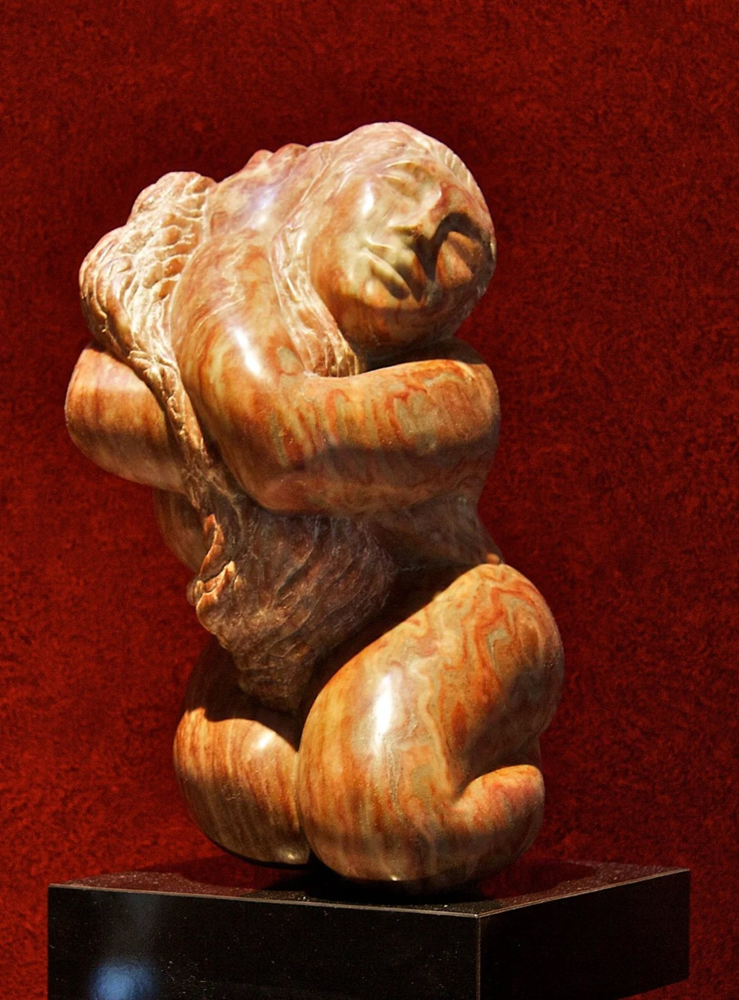

Jacqui Melman
Jacqui Melman is a New Jersey–based artist whose work is informed by her early study of color theory at The School of Visual Arts in New York City. She went on to receive a Bachelor of Fine Arts degree from the State University of New York at Albany, where she honed her singular sense of color and abstraction.
Her modernistic style carefully blends intensity, an inherent sexuality, and a divine sense of whimsy and humor. Much of her painted work is influenced by cubists like Max Weber and Georges Braque, with nods to the post-impressionists — and to Marc Chagall — surfacing throughout.
Her work has been shown in numerous juried exhibitions throughout the Hudson Valley of New York.

A decade with the chisel
After studying stone carving for the better part of a decade under the tutelage of renowned artist Elaine Warshaw, Jacqui launched her own school for aspiring sculptors in Manalapan, NJ.
Inspired by modernism and the stonework of José de Creeft, her carving is more classical in its elements than her work in other media — a counterweight of patience and permanence to the exuberance of her canvases.
"The form is already in the stone. My job — and my students' job — is to listen for it."Study with Jacqui
Training & influences
- The School of Visual Arts, NYC — early study of color theory that still anchors every canvas.
- BFA, State University of New York at Albany — where her sense of color and abstraction took shape.
- A decade under Elaine Warshaw — rigorous training in the craft of stone carving.
- Juried exhibitions across the Hudson Valley — paintings, sculpture, and mixed media.
- Founder, stone carving school in Manalapan, NJ — passing the craft to the next generation of sculptors.
See the work for yourself.
Paintings, sculpture, and mixed media — collected in one gallery.